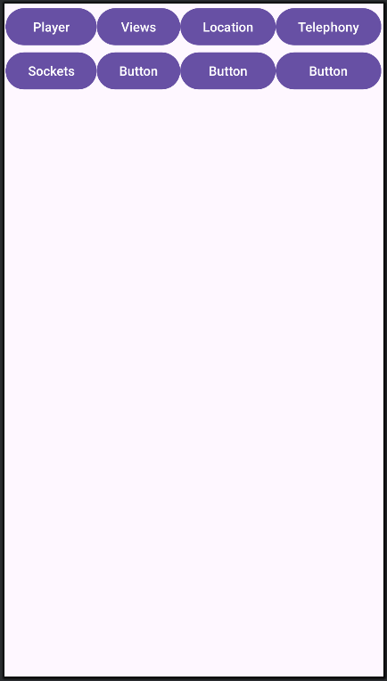

Практические задания
0. Ведение Git-репозитория (требования)
Зарегистрироваться на
Github(или аналоги);Создать ОДИН репозиторий под
Android-проект;НИКОГДА не менять или создавать новый репозиторий при возникших проблемах с
commit,push;Репозиторий должен содержать 1 (ОДНУ) основную ветку, если не противоречит заданиюж;
На
Git-репозиторий загружать весьAndroid-проект, НЕ просто файлы с*.ktили*.xml;Сгенерировать SSH-ключ на вашем устройстве, привязать ключ к профилю в
Github.com;Рекомендуется добавить проверочную фразу к ключу;
Выполнить первый
commitс обновленным README.MD, где будут указана информация о Вас (ФИО, № группы).
1. Основы ООП. “Ходячий”
Создать проект в
Intellij Ideaс названием вашего репозитория наGithub, либо создать проект внутри директории, если вы уже связали репозиторий наGithubс локальным на вашей машине;Создвать новую ветку в вашем
Git-проектес названием практического задания;В созданном проекте, по умолчанию будет создан
sample code, в котором и будет продолжаться дальнейшая работа;Создать Класс
Human, с свойствами:ФИО,Возраст,Текущая скорость;Класс должен содержать методы: конструктор со всеми свойствами, метод
move(), геттеры и сеттеры свойств класса;Метод
move()должен реализовать один из методов моделирования движений (в Картезианской системе координат): Random Walk, Gauss-Markov Mobility Model;В функции
main()создать массив из экземпляров (количество зависит от вашего номер в списке группы) классаHuman(), задать время “симуляции” (на свое усмотрение, в секундах), где в основном цикле “времени” заствить каждого Human ходить;Сделать коммит (один или несколько) и обновить в удаленном репозитории (git push);
Слить текущую ветку в “основную\стартовую” после проверки преподавателем;
В файле Readme.md описать (с формулами) принцип работы модели движения, выбранной в пункте 6. Вопросы к защите
1. Что такое свойство(свойства) класса?
2. Что такое методы класса?
3. Что такое первичный и вторичный конструкторы?
4. В чем особенность создания вторичного конструктора в языке Kotlin?
5. Что такое init{} в классе?
6. Какие основные положения ООП существуют?
2. Наследование.
Создать новую ветку Вашего проекта, в которой будет выполняться практическая работа;
В качестве нового функционала добавить класс-наследник
Driver(), который должен наследовать некоторые свойства (на ваше усмотрение) классаHuman();Движение объектов (экземпляров) класса
Driverдолжно быть прямолинейным (необходимо переопределить функциюmove()родительского класса);В основной фукнции
main()создать (2-4 объектаHumanи 1 объектDirve);В методе
move()реализовать параллельное движение каждого из объектов, созданных ранее; ИспользуемThread;Сделать
commit,push;Слить ветку в
main.
Почитать дома:
Вопросы к защите
1. Что такое наследование?
2. В каком случае необходимо наследование?
3. Написать программы, реализующую основной класс и класс-наследник (на усмотрение преподавателя).
3. Интерфейсы.
Создать новую ветку для реализации “интерфейса”;
Создать интерфейс
Movableс шаблонамисвойств(координаты, скорость и т.д.) иметодов(методmove()), необходимых для реализации движения объектов;Провести рефакторинг текущей кодовой базы, в частности:
Разделить классы\интерфейсы на файлы (1 класс = 1 файл);
Обновить описание проекта в README.md с информацией по каждому файлу.
Обновить удаленный репозиторий.
Почитать дома:
Интерфейсы Вопросы к защите
1. Что такое интерфейсы?
2. Чем отличается наследование интерфейса от "обычного" наследования? В каком случае логичнее наследовать от интерфейса?
3. Написать простой интерфейс вывода информации об объекте.
Android
4. Разработка простейшего калькулятора
Разработать простую версию калькулятора, используя TextView, Button и обработчик нажатия (onClickListener).
Требования к “калькулятору”:
Калькулятор должен состояить из кнопок циферблата (от
0до9);Должен включать в состав
Layoutкнопки “действий” (+,-,*,/,=);Должен включать в состав
TextViewдля отображения результата нажатия наButton’s из пунктов 1 и 2.При нажатии на
=необходимо обработать строку изTextViewвручную и выполнить записанные в строку операции;Достаточно обработки одной операции, нет необходимости обработки нескольких операций.
Результата отправить на Github (или аналоги) репозиторий;
Android-проект будет основным в ветке main\master;
Заменить весь Ваш проект файлами
Android-studio, оставив директорию с исходным кодом (переместить по схеме ниже).
Репозиторий Git все файлы предыдущего репозитория должны лежать внутри кода Android.
app
├── manifests
│ └── AndroidManifets.xml
├── kotlin+java
| ├── Movable/ # Ваш код с практик 1-3.
| | ├──Human.kt
| | └── и т.д.
| └── MainActivity.kt
├── res
│ ├── drawable/
│ ├── layout/
│ ├── mipmap/
| ├── values/
| └── xml/
└── Gradle Scripts/
4.5. Рефакторинг. Разделение по Activities.
Из
MainActivityнеобходимо создать некийhub, в котором будут отображаться кнопки перехода на другиеActivity;Функционал калькулятора из
ПР4перенести на новое (необходимо создать) новоеActivity;Реализовать метод перехода из
MainActivityв другие при помощи кнопок.
Пример перехода но другое Activity при нажатии на кнопку bGoToPlayerActivity:
bGoToPlayerActivity.setOnClickListener({
// Создаем Intent для класса MediaPlayerActivity - это MediaPlayerActivity.kt
val randomIntent = Intent(this, MediaPlayerActivity::class.java)
// Переходим в в другое Activity
startActivity(randomIntent)
});
Пример MainActivity

5. Разработать MediaPlayer для воспроизведения музыки
Цель: Научиться работать с файлами внутренней (или внешней) памяти смартфона, в частности, со звуковыми “дорожками”. Исползование класса MediaPlayer поможет в создании “каркаса” для MP3-проигрователя.
Создать новое
Activityдля работы сMediaPlayer;MediaPlayer должен поддерживать функции: воспроизведение текущего трека, пауза текущего трека, обработка перехода
Activityв состояниеonPause(), регулировка громкости,SeekBarдля отображения текущей длительности трека и его движение, перемотка трека (при помощиSeekBar);Возможность вопроизводить музыку из хранилища телефона при помощи Permission, строки 41-53;
Важно реализовать проверку текущего файла на директорию (
isDirectory);Отображение списка треков на экране
Activity.
6. Местоположение смартфона. Location
Цель: получить доступ к данным о местоположении Android-телефона и вывести на экран значения. За основу можно взять пример.
Создать
ActivityLocation, в основном окнеMainActivityдобавить кнопку перехода в новую ‘Activity’;Получить доступ к классу Location при помощи permissions:
ACCESS_FINE_LOCATION,ACCESS_COARSE_LOCATION;Вывести в
Activityданные о текущем (или последнем известном) местоположении смартфона:Получить данные можно при помощи метода getLastLocation()
При каждом обновлении местоположения записывать данные в файл (лучше в формате
Json);ДОП. БАЛЛЫ. Обернуть получение местоположения смартфона в сервис с целью записывать данные о местоположении в
backgroud-режиме (когда приложение закрыто,activityне видно пользователю).ДОП. БАЛЛЫ. Выполнить
Refactoringкода. Необходимо разделить код на логические составляющие (директории и файлы):
Названия директорий могут отличаться от Ваших:
1. UI - все что связано с визуальной составляющей (Activity, Fragments, и т.д.);
2. Services - отдельно классы сервисов, если такие имеются;
3. Data-классы - классы-структуры, связанные с записью данных в файл, базу данных или при передаче по сокетам. Они состоят только из переменных\свойств класса, без методов;
4. Supp - вспомогательные фукнции, например, чтение из файла, запись в файл и т.д.
Вопросы к защите
Что такое
Latitude,Longitude,Altitude? В чем измеряется? Если ли ограничение значений? Если да, от чего зависит?Что такое
Unix Epoch Time?Как считается время в мобильных телефонах? Есть ли разница с вычислением времени на спутниках? Какая точность измерений?
7. Реализация клиент-серверного приложения (Python\clang)
Создать новый репозиторий в профиле
github(для backend-сервера);В созданный репозиторий добавить Ваш проект
Android'aкакsubmodule;В корне репозитория создать папку
examples/, где будут находится примеры работы клиент-серверного приложения;Создать 2 файла:
client.py,server.py;Реализовать передачу данных (можно просто “Hello World!”) от клиента к серверу и обратно;
Посмотреть результат работы приложений в программе Wireshark, найти переданные сообщения;
Добавить еще один файл в
examples/:client.cилиserver.c;Реализовать соединение и передачу данных между примером на языке
Pythonи примером на языкеСИ;git commit&&git push.
Вопросы к защите
Что такое сокет (с точки зрения операционной системы)?
Из чего состоит сокет (в сетевой части)?
Для чего нужны функции
accept(),listen(),bind()? Что выполняет каждая функция?Что такое файловый дескриптор? Как он связан с текущим процессом? Как он связан с операционной системой?
Из чего состоит информация о файлах с точки зрения операционной системы?
Расскажите что происходит при установлении TCP-соединения в вашей программе (анализируя
Wireshark)?
8. Работа с сокетами (ZMQ). Передача данных от Android к PC
На базе примера реализовать передачу данных внутри приложения
Android(ваш предыдущий проект);Создать новое
Activity, в котором будет реализованы функцииклиентаисервера;Реализовать начало передачу данных между сервером и клиентом при нажатии на кнопку (создать новую кнопку);
Новый функционал должен находится в отдельной (от основной) ветке (создаем новую ветку (
branch));
Наладить передачу данных от Вашего приложения (Android) на приложение-сервер на Вашем компьютере (или VPS, если имеется):
Сервер(компьютер) - запустить серверную часть на базе языкаPython+ZMQ;Android- выступает в роли клиента (на базеZMQ), подключается к серверу;Ваш компьютер и телефон (
Android) должны находится в одной сети (Wifi, USB, Internet (если есть белыйip-адрес));В роли данных со стороны
Android-приложения выступает строка"Hello from Andorid!";Данные со стороны сервера -
"Hello from Server!";Сервернаячасть ДОЛЖНА сохранить (в файл) каждый блок данных, пришедший со смартфона, и считать количество полученных пакетов.Серверная часть также должны иметь метод\функцию по выводу на экран (консоль) всех сохраненных данных;
Git:Android- Сделать c merge request с новым функционалом;Server- добавить новый коммит, обновить удаленный репозиторий.
9. Backend-сервер на CXX
Скоректировать
backend-сервер в сторону работы на базе языка C++. Пример работы C++ и ZMQ.Реализовать передачу данных о местоположении смартфона (см. Задание №6) на CXX-сервер. Сервер должен:
При получении данных от смартфона сохранять их в файл
.json;Работа
ZMQ-сокетов должна выполняться в отдельном (отint main()) потоке (thread). Простой пример;Приложение (
Android) должно автоматически переподключаться к серверной части, в случае разрыва соединения (при помощиtryи проверки на разрыв соединения);
Реализовать графический интерфейс (ImGUI или Qt5\6), в котором:
Релизовать виджет (окно) с информацией о местоположении (которую мы получили в пункте 2.). В виде текстовой информации;
Информация должна обновляться каждый раз, когда данные принимаются от
Android-приложения;Обернуть реализацию визуального интерфейса в отдельный поток (см. по аналогии с
пунктом 2.2).
Связь между двумя потоками (пункты
2.2и3.3) осуществляется при помощи одной общей структуры (или класса), например:
struct location
{
float latitude;
float longitude;
float altitude;
// и т.д.
};
void run_gui(locaiton *loc){
// здесь работает GUI поток
// Выводит данные из ГЛОБАЛЬНОЙ структуры location
}
void run_server(locaiton *loc){
// Здесь работает поток серверный
// Записывает данные в ГЛОБАЛЬНУЮ структуру location
}
int main(){
static location locationInfo;
std::thread gui_thread(run_gui, &locationInfo);
std::thread server_thread(run_server, &locationInfo);
gui_thread.join();
server_thread.join();
return 0;
}
XX. Android background service.
Реализовать в приложении Android сервис работы в фоновом режиме.
Реализовать получение данных и передачу на backend-сервер след. данные о смартфоне:
При помощи класса
Telephonyполучаем информацию о сетях мобильной связи:CellInfoLte: CellIdentityLte, CellSignalStrengthLte;
CellIdentityLte: Band, CellIdentity, EARFCN, MCC, MNC, PCI, TAC;
CellSignalStrengthLte: ASU Level, CQI, RSRP, RSRQ, RSSI, RSSNR, Timing Advance;
CellInfoGsm: CellIdentityGSM, CellSignalStrengthGsm;
CellIdentityGSM: CellIdentity, BSIC, ARFCN, LAC, MCC, MNC, PSC;
CellSignalStrengthGsm: Dbm, RSSI, Timing Advance;
CellInfoNr: CellIdentityNr, CellSignalStrengthNr
CellIdentityNr: Band, NCI, PCI, Nrargcn, TAC, MCC, MNC;
CellSignalStrengthNr: SS-RSRP, SS-RSRQ, SS-SINR, Timing Advance;
Данные о местоположении смартфона (см. практику №6):
Accuracy- точность вычисления местоположения;
Информацию о сетевом трафике смартфона:
Информация об общем количестве переданных данных;
Информация о ТОП приложений (входящих в
2-сигмапо потреблению трафика), потребляющих интернет-трафик смартфона.
XX. Двустороннее управление поверх сокетов (Android <-> Backend)
В вашем приложении (
backend gui) настроить фильтрацию передаваемых данных c со стороныAndroid-приложения:В
backend-guiприложении реализовать вкладку с фильтрами (при помощи объектовCheckbox, у которого есть состоянияtrueиfalse). Список переменных должен совпадать со списком из Практической работы №XX. Android background service.При состоянии какого-либо
Checkbox = false, передать команду наAndroid-приложениеНЕ передавать (или передавать, еслиtrue) при помощиZMQ-сокетов: 2. Это значит, что при получении или передачи пакетов между вашими приложениями необходимо добавить некоторыеуправляющиекоманды, которые Вы должны обработать вручную (if elseилиswitch caseи т.д.).Продолжение следует…